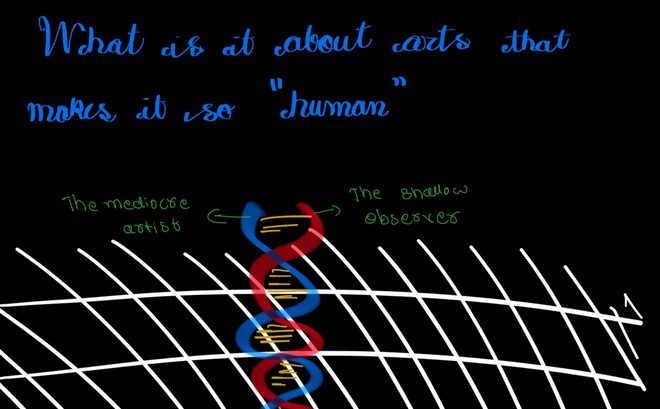

Tacit Collusion in Pricing Agents
One agent that refuses to follow high prices is enough to pull a colluding market back down. High AI prices alone aren't proof of collusion.
I work on continual self-play reinforcement learning for LLM post-training, and on why networks gradually lose the ability to learn. Before this I was a research intern at IISc's Stochastic Systems Lab, where we developed the SOR family of Bellman updates.
I write by hand, mostly about art, the absurd, and what AI does to both.
Statistics can tell humour from horror. It can't tell you why depth needs friction, and RLHF trains that friction away.
Essay · handwritten · 17 Nov 2026
Art has no meaning outside the human mind. So what happens to it when we hand our thinking to models?
One agent that refuses to follow high prices is enough to pull a colluding market back down. High AI prices alone aren't proof of collusion.
A single relaxation factor ω that unifies TD-learning update rules. Up to 65% better on Atari. With Raghuram Bharadwaj and Shalabh Bhatnagar.
If a policy can measure a forbidden state, an attacker can reconstruct it. So make forbidden states unmeasurable.
Studying plasticity collapse when language models train against themselves in environments that keep changing.
I'm glad to hear from people working on RL, self-play, or AI safety. A short note on the problem you're thinking about is the best way to start.